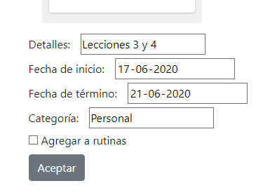
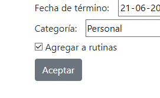

Para crear una nueva actividad, presiona Nueva actividad. Luego, escribe el nombre de la actividad y pulsa Agregar.

Para agregar detalles a la actividad recién creada, has doble click en ella y completa los campos que necesites. Puedes agregar detalles, fecha de inicio y de término, o categoría.

Puedes ordenar tu lista de tareas simplemente arrastrando la actividad y soltándola en la posición que desees.